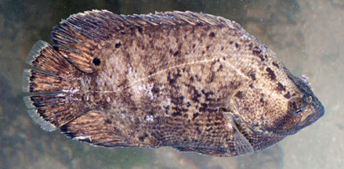
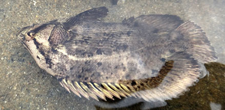

|
|
| fishes text index | photo index |
| Phylum Chordata > Subphylum Vertebrate > fishes |
| Tripletail Lobotes surinamensis Family Lobotidae updated Sep 2020 Where seen? This fish floats on its side with its head down, so it resembles a drifting leaf or bit of floating rubbish. It was seen at Tanah Merah. Elsewhere, adults are found in bays, coastal areas and muddy estuaries and lower reaches of large rivers. Ocassionally near reefs and among floating objects far out at sea. Young fishes may be found drifting with sargassum weed, pretending to be floating leaves. Features: 20cm to 1m. The forehead is steeply sloping and humped. The tail fin and the ends of the dorsal and anal fins are rounded and about equal sized, thus giving the impression that the fish has three tails. Colours varies from dark or reddish brown with dark mottles to pale. Adults are dark brown or greenish yellow above, silvery grey below; pectorals pale yellow, other fins darker than body; caudal fin with yellow margin. May be mistaken for the Brown sweetlips. |
 Tanah Merah, Jun 09 |
 Tanah Merah, Jun 09 |
| What does it eat? It feeds on small fishes and crustaceans
that live on the bottom. Human uses: It is eaten in some places. |
| Tripletails on Singapore shores |
On wildsingapore
flickr
|
| Other sightings on Singapore shores |
 Tanah Merah, Feb 11 Photo shared by Marcus Ng on flickr. |
||
| Family
Lobotidae recorded for Singapore from Wee Y.C. and Peter K. L. Ng. 1994. A First Look at Biodiversity in Singapore.
|
Links
References
|